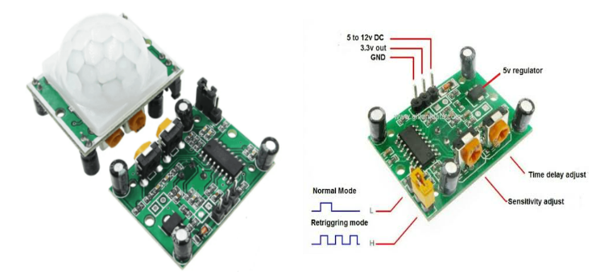
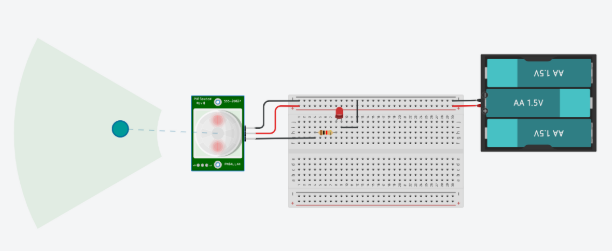
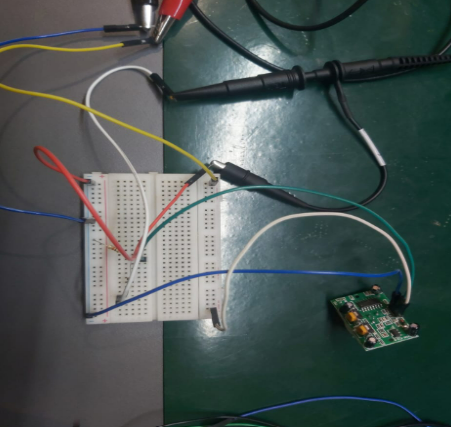
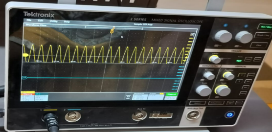
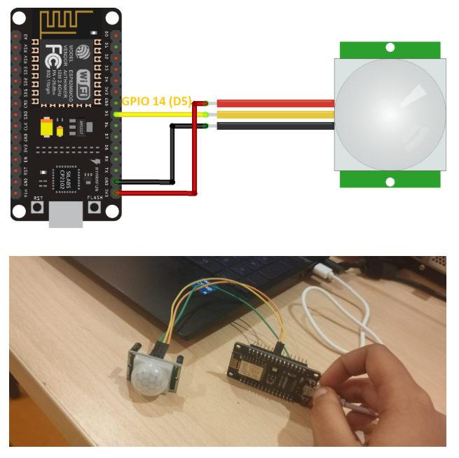
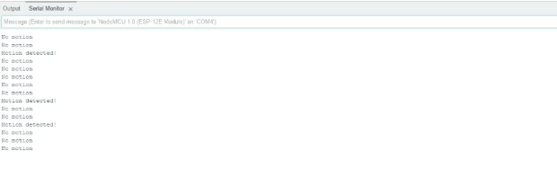
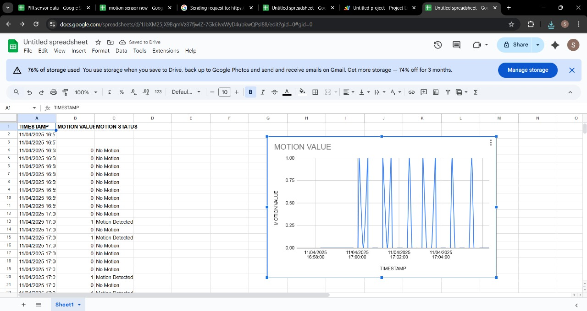

HC-SR501 PIR Motion Sensor
Built with: HC-SR501 PIR Sensor + ESP8266MOD + Google Sheets
Introduction
The HC-SR501 PIR Motion Sensor is used for motion detection in security and IoT systems. It detects infrared radiation changes and outputs a signal accordingly. This page details its working, oscilloscope testing, NodeMCU integration, and Google Sheets logging.

PIR Sensor Specifications
- Operating Voltage: 4.5V - 20V
- Detection Angle: Up to 120°
- Detection Range: 3m - 7m (Adjustable)
- Delay Time: 5s - 300s (Adjustable)
- Trigger Modes: Retriggerable and Non-Retriggerable
Working Principle
The PIR sensor uses two IR-sensitive elements. When a moving object enters its field, the infrared difference is detected, and a HIGH signal is output.
Standalone Testing with Oscilloscope
- HC-SR501 PIR Motion Sensor
- Oscilloscope (MSO/DSO)
- Power Supply (5V)
- 10kΩ pull-down resistor
- Jumper wires
Key Connection: OUT pin connected to scope probe and a 10kΩ resistor to ground to avoid floating signals.
Issue Fix: No output was resolved by using the pull-down resistor.


DSO Output

Arduino IDE Setup for ESP8266MOD
- Install Arduino IDE from official site.
- Add ESP8266 board URL to Preferences.
- Install ESP8266 board via Boards Manager.
- Select "NodeMCU 1.0 (ESP-12E Module)" and the correct COM port.
Driver Error Fix: Install CH340 driver if board fails to connect. Check and roll back driver if needed.
Connection: PIR Sensor + ESP8266MOD
- VCC -> 3V3
- GND -> GND
- OUT -> D5 (GPIO14)

Basic Arduino Code
#define PIR_PIN D5
void setup() {
Serial.begin(115200);
pinMode(PIR_PIN, INPUT);
Serial.println("PIR Motion Sensor Initialized");
}
void loop() {
int motionDetected = digitalRead(PIR_PIN);
Serial.print("Motion Value: ");
Serial.println(motionDetected);
delay(500);
}
Serial Monitor Output

IoT Integration with Google Sheets
- Create Google Sheet with headers: Timestamp, Motion Status, Motion Value.
- Open Apps Script from Extensions & add the following code:
function doGet(e) {
var sheet = SpreadsheetApp.getActiveSpreadsheet().getActiveSheet();
var motionStatus = e.parameter.motionStatus || "Unknown";
var motionValue = e.parameter.motionValue || "N/A";
var timestamp = new Date();
sheet.appendRow([timestamp, motionStatus, motionValue]);
return ContentService.createTextOutput("✅ Data logged successfully");
}
Deploy as Web App (accessible by anyone) and copy the URL.
ESP8266 Arduino Code for Google Sheets Logging
#include
#include
const char* ssid = "Redmi 10";
const char* password = "Nithi2004";
const char* host = "script.google.com";
const char* fullUrl = "";
WiFiClientSecure client;
const int pirPin = D5;
void setup() {
Serial.begin(115200);
pinMode(pirPin, INPUT);
WiFi.begin(ssid, password);
while (WiFi.status() != WL_CONNECTED) {
delay(500);
}
client.setInsecure();
}
void loop() {
int motionValue = digitalRead(pirPin);
String motionStatus = (motionValue == 1) ? "Motion Detected" : "No Motion";
motionStatus.replace(" ", "%20");
String url = String(fullUrl) + "?motionValue=" + String(motionValue) + "&motionStatus=" + motionStatus;
if (client.connect(host, 443)) {
client.print(String("GET ") + url + " HTTP/1.1\r\n" +
"Host: " + host + "\r\n" +
"Connection: close\r\n\r\n");
}
delay(5000);
}
Google Sheets Output:

Conclusion
This project demonstrates successful motion detection and real-time IoT logging using a PIR sensor, NodeMCU, and Google Sheets.